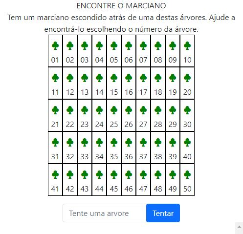
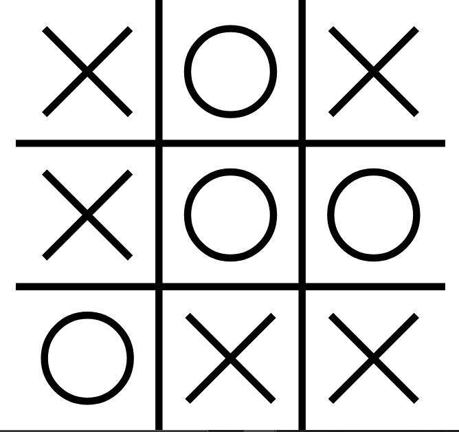
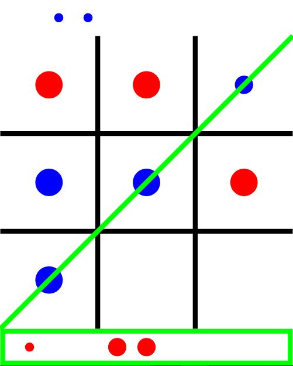
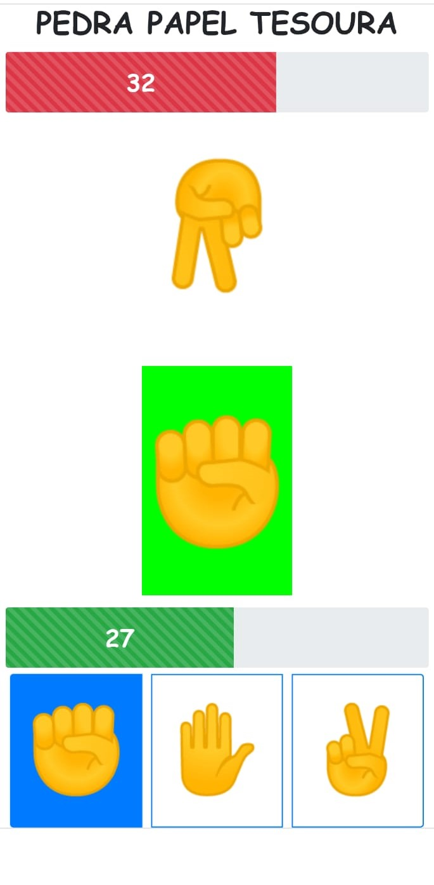
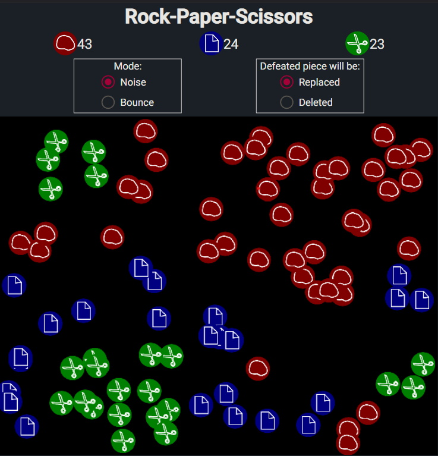

Jogo do Marciano
Tente acertar o marciano atrás da árvore.
No final dos anos 70, época em que computadores pessoais como CP-200 e TK-85 estavam surgindo, os fabricantes demonstravam seus produtos com este jogo bem simples em feiras de eletrônicos.
Outros clássicos da época eram a calculadora de biorritmo, a impressão de imagens usando caracteres de impressoras matriciais e jogos de plataforma rudimetares que lembram o atual jogo do dinossauro offline.

Jogo da velha
Faça a linha primeiro.
O milenar jogo da velha já foi muito estudado e todas as combinações possíveis já foram definidas. Este jogo conhece todas elas e não vai deixar você ganhar, no máximo empatar. Descuide-se e o computador vence.

Jogo da velha 2
Jogo da velha com 3 tamanhos de peça diferentes. Você pode jogar uma peça maior sobre uma menor.
Inspirado no milenar jogo da velha, este jogo conta com 3 peças de tamanhos diferentes que podem ser jogadas sobre peças menores. As combinações possíveis são muito maiores que o jogo da velha convencional e o computador não conhece todas elas. Porém ele sempre estará avaliando diversas jogadas a frente e será um adversário difícil de ser batido.

Pedra Papel Tesoura
Vença o computador fazendo 50 pontos primeiro.
Este jogo de Pedra-Papel-Tesoura é alimentado por uma inteligência artificial que aprende com as suas jogadas. Uma vez que ela aprende seu modo de jogar passa a ser um adversário formidável.

Rock Paper Scissors
Um jeito diferente de jogar Pedra-Papel-Tesoura
Numa arena as peças de Pedra-Papel-Tesoura se enfrentam numa batalha mortal.
Missile Command
Salve-se do ataque de mísseis.
Quando o Atari foi lançado no Brasil este jogo vinha de brinde com o console.
Gorilas
Acerte o gorila inimigo.
Jogo clássico dos anos 70 usado para demonstração dos primeiros compuratores pessoais como CP-200 e TK-85. Um dos primeiros jogos a implementar física em seu funcionamento.
Pong
Vença esse duelo entre dois jogadores.
Este era um dos 3 jogos que vinham embutidos no primeiro Telejogo Philco. Os outros dois eram futebol e paredão que contavam com a mesma mecânica de jogo porém com obstáculos diferentes.
Comentários
Maria Samantha - 2 h
Amei o site! Sucesso!